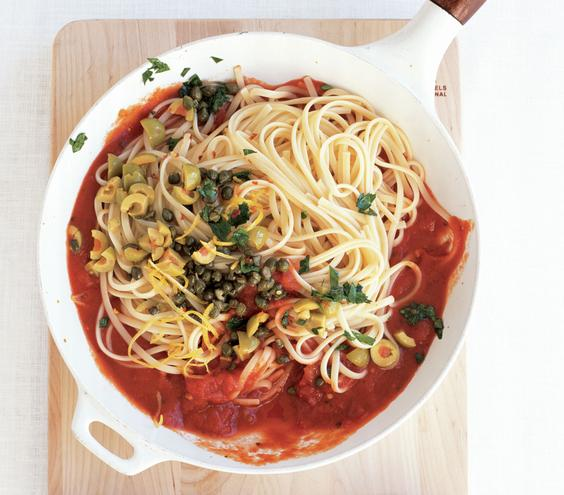

Linguini Green Olive Oil Sauce

Ingredients
- 1tablespoon olive oil
- 2 cloves garlic, thinly sliced
- 1/4teaspoon crushed red pepper flakes
- 126-ounce jar marinara sauce
- 16.75-ounce jar Spanish olives, drained and roughly chopped
- 13.5-ounce jar capers, drained and roughly chopped
- 1/2cup fresh flat-leaf parsley, coarsely chopped
- 1/2teaspoon lemon zest
- 11-pound box linguine
DIRECTIONS
Heat the oil, garlic, and crushed red pepper in a large saucepan over medium heat until fragrant, about 2 minutes.
Add the marinara sauce, olives, capers, parsley, and lemon zest. Reduce heat to low and simmer for about 15 minutes.
Meanwhile, cook the linguine according to the package instructions. Drain and add to the sauce, tossing to coat. Transfer to a serving dish.